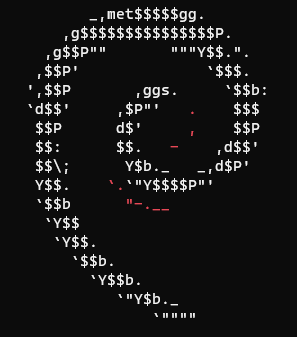
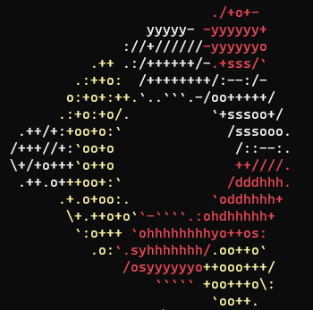
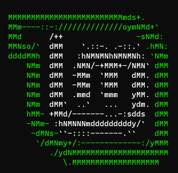
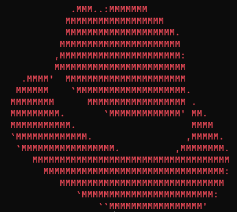
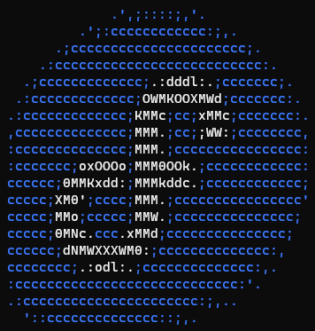
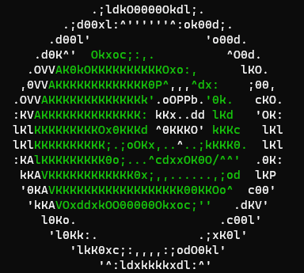
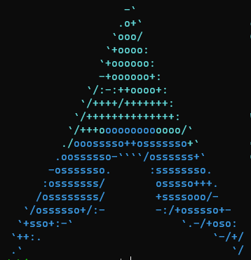
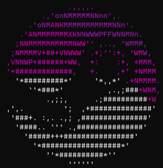
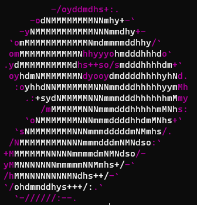
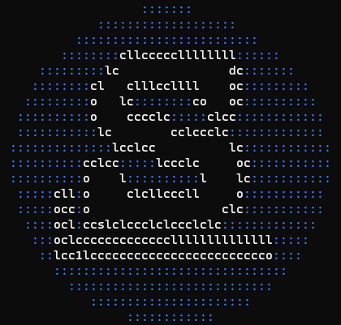

Linux 發行版 (Linux distributions)
...
介紹Arch Linux之前，這頁先簡單介紹常見的Linux發行版
因為沒那個心去確認商標使用權，因此發行版的圖示均是使用screenfetch印出文字後，再用截圖方式放到本網頁
實際上存在多少發行版，可以看看這張圖這個
_(Debian-based)
Debian GNU/Linux
 作為上游最大的發行版，Debian套件庫中包含超過51000個軟體包。由於其deb是相當方便的打包格式，使Debian能用的軟體數量更加龐大。Debian版本發布前會進行非常嚴謹的測試，約略三年發布一次大型版本，Debian也因此以穩定著稱
Ubuntu
 Ubuntu基於Debian較新的套件，約略6個月發行一次版本，還能透過PPA擴增更多源，在安裝和配置也給了很多現成選項，算是對使用者"十分友好"的發行版。對於追求個人化的使用者，通常不會止步於Ubuntu，就如ArchWiki所描述: "Many Arch users have started on Ubuntu and eventually migrated to Arch."
Linux Mint
 Mint是基於Ubuntu的改版(現在也有基於Debian的版本)，通常在新版Ubuntu後一個月就會發布，致力於打造更友好的使用環境，桌面環境Cinnamon便是由Mint團隊開發。Mint對MP3等專利軟體支援也相對較好，如果想從其他作業系統"跳槽"到Linux，Mint是個好選擇
_(RPM-based)
Red Hat Enterprise Linux
 雖然不是最老的一批，但紅帽的Linux也算是發行版的老前輩了。從以前的Red Hat Linux到現在的Red Hat Enterprise Linux，紅帽專注於販售Linux套件和其他服務，其RPM格式重要性不下deb，尤其在商業上被大量應用
Fedora
 被紅帽當成RHEL前期測試的發行版，Fedora追求新技術的策略相當激進。儘管Fedora本身是以版本發行，但套件以相對快的速度測試及更新，且大多允許跨版本升級。Fedora安裝介面講求圖形化及輕量化，難怪曾說過Debian安裝複雜的Linus Torvalds選擇它
openSUSE
 SUSE公司贊助與開發的發行版。在RPM系中，openSUSE是對使用者相對友好的發行版。openSUSE提供相當方便的使用者介面，包含許多自動配置功能。除了相對穩定Leap以外，openSUSE提供一個滾動發行的Tumbleweed版本，更新速度甚至不輸Arch(當然我更喜歡Arch，依賴套件更少更簡潔些)
_(Arch Linux-based)
Arch Linux
 作為我最喜歡的發行版，在網站中給這麼小空間我都覺得對不起了。如果看了這麼多發行版覺得眼花撩亂就直接去這裡看吧。總之，Arch是追求KISS極簡風格、滾動發行並且高度強調實用性和社群力量，極為優秀的發行版
Manjaro
Manjaro的目標是成為更方便的Arch Linux，相對Arch提供了GUI安裝並有自己的套件庫，且能直接利用AUR上的資源。就我個人的使用經驗，Manjaro通常套件只比Arch晚約一週，而且Manjaro預設的GUI環境挺不錯的。如果不在意一些無法更動的設定和軟體，我挺推薦大家嘗試
SteamOS
 SteamOS是Valve用於掌機Steam Deck的作業系統，於3.0版開始將從Debian改為以Arch為底開發。雖然相比"正規"的發行版，SteamOS限制了許多功能，但自從Steam Deck這款掌機推出，就一直在打破人們對於"Linux不適合作為遊戲平台"的印象。
_Gentoo
 滾動發行，擁有強大的套件管理員。與大多數系統不同，Gentoo套件不直接提供binary，而是可編譯的源代碼。儘管自由度數一數二，但個人認為電腦性能不強的話，Gentoo不是人玩的東西。根據ArchWiki: "If comfortable with systemd, Gentoo users will also generally feel at ease with most other aspects of Arch."
_Slackware
 少數經過多年還健在的元老級Linux。高自由度、保持KISS(極簡)原則，用戶多半追求穩定並手動處理套件管理和依賴關係。在現今發行版中算是特立獨行的存在，適合進階使用者。一樣，來引用ArchWiki: "Slackware users will generally be quite comfortable with most aspects of Arch."
_Linux From Scratch
...如果Gentoo和Slackware不是給人玩的，這東西絕對堪稱不是給人看的